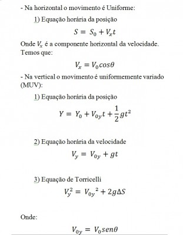

Experimento 02 - Movimento de projétil
O que é o Lançamento Oblíquo?
O lançamento oblíquo é uma junção de movimentos na vertical e horizontal. Ocorre quando o objeto lançado forma um determinado ângulo com a horizontal. O lançamento oblíquo ocorre quando um objeto inicia
seu movimento formando um determinado ângulo com a horizontal.
Princípio da Simultaneidade ou Princípio da Independência dos Movimentos
Se um corpo apresenta um movimento composto, cada um dos movimentos de seus componentes se realiza como se os demais não existissem e no mesmo intervalo de tempo.Isso é importante, pois nesses dois movimentos, no lançamento horizontal
e oblíquo, teremos duas componentes da velocidade que serão independentes entre si, de acordo com o princípio proposto por Galileu.
Lançamento Horizontal
Quando um corpo é lançado horizontalmente sem resistência do ar, ele descreve, em relação à Terra, uma trajetória parabólica.

Fonte: Descomplica
{kind=link}
Esse movimento é considerado, de acordo com o princípio da simultaneidade, o resultado da composição de dois movimentos simultâneos e independentes: queda livre (Vy) e movimento horizontal (Vx).

Componentes da velocidade. Fonte: Descomplica
{kind=link}
Movimento Horizontal
Um movimento uniforme não possui aceleração na horizontal, ou seja, o corpo mantém sua velocidade inicial por todo o movimento. Esse fenômeno é facilmente entendido pela primeira lei de Newton, que diz que “todo corpo,
livre da ação de forças, tem a tendência natural de permanecer em movimento uniforme”. É a Lei da Inércia.
Movimento de Queda Livre
Ocorre sob ação da gravidade, o que o classifica como um MUV, já que a aceleração é constante.
Lançamento Oblíquo
Considere um corpo sendo lançado com uma velocidade inicial em uma direção que forma com a horizontal um ângulo qualquer. A única aceleração que age sobre o corpo é a da gravidade. A trajetória descrita é uma trajetória parabólica.

Fonte: Descomplica
{kind=link}
A distância horizontal que o corpo percorre é chamada de alcance. A distância máxima que o corpo percorre na vertical é chamada de altura máxima. Na altura máxima, a velocidade na vertical é nula.
Funções que Descrevem os Movimentos
Como os movimentos são separados em duas componentes, uma vertical e outra horizontal, e essas componentes têm características bem diferentes, teremos funções para a componente vertical e para componente horizontal. Tudo o
que aparecer na vertical será chamado de y, e tudo o que aparecer na horizontal, de x.
Fonte: Descomplica
{kind=link}
Fonte: Descomplica
{kind=link}